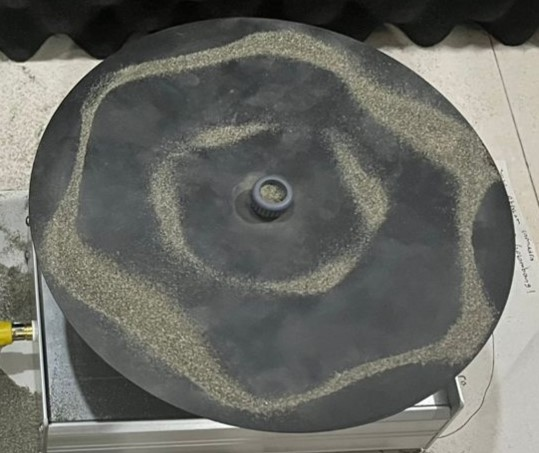

Pola Chladni: Tarian Pasir Gelombang Berdiri
KELOMPOK 2
Departemen Fisika
Institut Teknologi Sepuluh Nopember

Departemen Fisika
Institut Teknologi Sepuluh Nopember

Latar belakang, Rumusan masalah, Tujuan percobaan, dan Batasan masalah
Dasar Teori
Alat dan Bahan, Skema Alat, serta Diagram Alir
Analisis data, Hasil Perhitungan, Grafik, dan Pembahasan
Kesimpulan dan Saran
Dalam kehidupan sehari-hari, fenomena muatan listrik dapat teramati mulai dari rambut yang berdiri akibat penggaris plastik hingga cara kerja printer dan mesin fotokopi, yang semuanya membuktikan bahwa muatan listrik memiliki peran fundamental dalam teknologi modern. Melalui rekonstruksi Eksperimen Tetes Minyak Millikan dengan Koreksi Cunningham, praktikum ini bertujuan membuktikan sifat kuantisasi muatan listrik sekaligus menentukan nilai muatan elementer secara eksperimental.
Gaya apung adalah gaya ke atas yang bekerja pada benda yang dicelupkan sebagian atau seluruhnya ke dalam fluida (zat cair atau gas).
Gaya gravitasi adalah gaya tarik-menarik yang terjadi antara dua benda yang memiliki massa.
Gaya apung adalah gaya ke atas yang bekerja pada benda yang dicelupkan sebagian atau seluruhnya ke dalam fluida (zat cair atau gas).
Gaya gravitasi adalah gaya tarik-menarik yang terjadi antara dua benda yang memiliki massa.
Gaya apung adalah gaya ke atas yang bekerja pada benda yang dicelupkan sebagian atau seluruhnya ke dalam fluida (zat cair atau gas).


| No | Parameter | Nilai | Satuan |
|---|---|---|---|
| 1 | Diameter plat \((D)\) | 20 | cm |
| 2 | Jari-jari plat \((R = D/2)\) | 10 | cm |
| 3 | Ketebalan plat \((h)\) | 1 | mm |
| 4 | Material plat | Baja | - |
| No | \(f(Hz)\) | Mode (m, n) | Jumlah Garis | Jumlah Lingkaran | Gambar | Deskripsi Pola |
|---|---|---|---|---|---|---|
| 1. | 382.4 | (0, 2) | 0 | 2 |  | |
| 2. | 3758.5 | (0, 6) | 0 | 6 |  | Terdapat 6 lingkaran |
| 3. | 8446.5 | (0, 8) | 0 | 8 |  | Terdapat 8 lingkaran |
| 4. | 195.8 | (3, 0) | 3 | 0 |  | Terdapat 3 garis silang |
| No | \(f(Hz)\) | Mode (m, n) | Jumlah Garis | Jumlah Lingkaran | Gambar | Deskripsi Pola |
|---|---|---|---|---|---|---|
| 5. | 1124 | (0, 3) | 0 | 3 |  | Terdapat 3 lingkaran |
| 6. | 325 | (2, 0) | 2 | 0 |  | Terdapat 2 garis silang |
| 7. | 596 | (0, 2) | 0 | 2 |  | Terdapat 2 lingkaran |

Grafik regresi linear antara muatan tetesan (qavg) terhadap bilangan bulat kuantisasi (n) pada data tanpa koreksi, dan data dengan koreksi Cunningham.
Pembahasan lanjutan, sumber kesalahan, dan interpretasi hasil.
Ringkasan temuan utama, kesimpulan, dan saran untuk tindak lanjut.